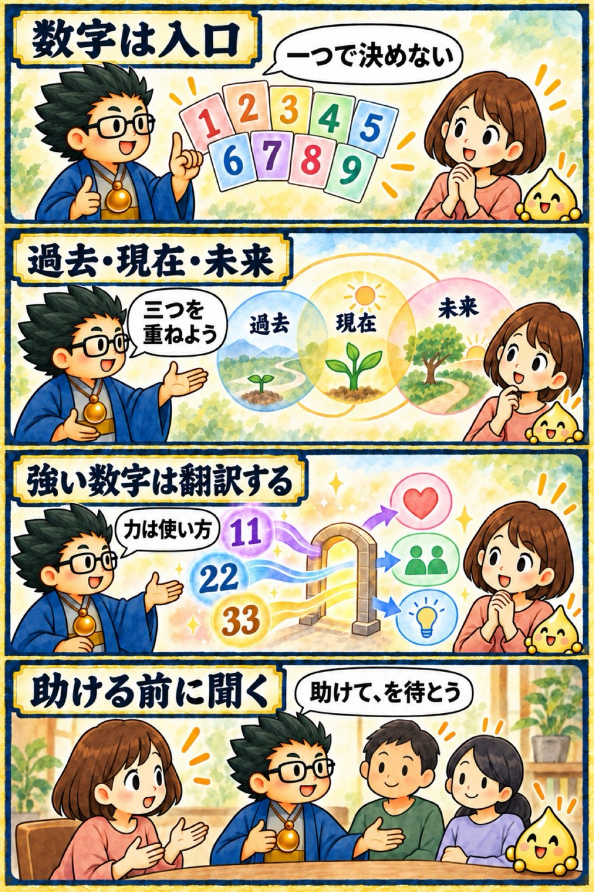

2025年 無料講座・第3回
数秘術入門講座
この回の要約
数秘術は、数字で人を決めるためではなく、本人の経験を聞くための入口として使います。
この回では、生年月日から「過去・現在・未来」の三つの数字を出す考え方、1〜9と11・22・33の読み方、複数の数字が示す強みと葛藤を学びます。最後は、得た特徴を一方的な助言にせず、相手の希望を聞いて日常語へ翻訳する方法へつなげます。
数字ごとの性格、マスターナンバー、宇宙・地球・人のルールに関する説明は、客観的な診断ではなく、講義内の数秘術上の見立て・比喩として整理しています。
4コマ漫画でつかむ

タイムスタンプ
時間を押すと、上の動画がその場面から再生されます。
覚えておきたいこと
- 数秘術の数字は、本人を決める答えではなく、経験を聞く入口として使う。
- 過去・現在・未来の三つを、土台・今の関心・次に育てるテーマとして重ねる。
- 同じ数字や反対の数字があっても、良し悪しを断定せず、生活での表れ方を確認する。
- 1〜9、11・22・33の意味は、講義内の数秘術上の見立てとして扱う。
- 強い言葉や特別感をそのまま渡さず、具体例と今日できる一歩へ翻訳する。
- 助言や支援の前に、相手の希望、時期、受け取り方を聞く。
復習ポイント
講義内の占術上の説明・時代の読み・象徴的な解釈は、講師の見立てです。客観的な事実や将来を保証するものではありません。